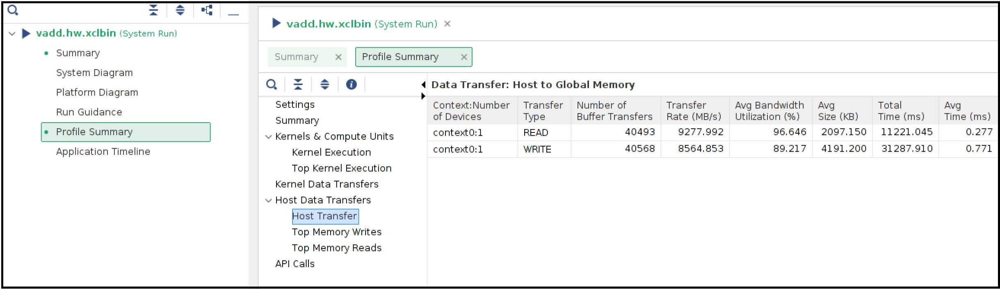
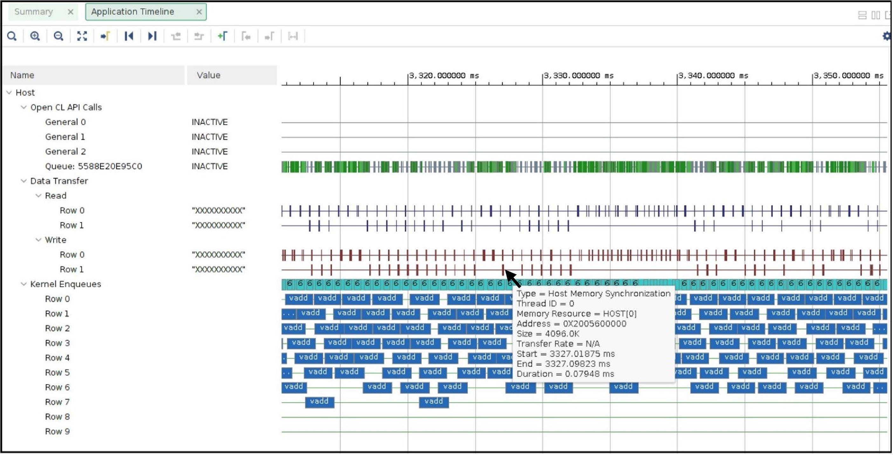

ホスト メモリ アクセス¶
バージョン: Vitis 2021.2
最近のザイリンクス プラットフォームの中には、DMA 操作をバイパスして、カーネルが直接ホスト メモリにアクセスできるようにする XDMA 機能があるものがあります。直接ホスト メモリにアクセスすることで、XDMA ベースのデータ転送とは別のデータ転送メカニズムが提供され、シナリオによっては役立つことがあります。
カスタム カーネル開発者は、既に開発済みの DMA エンジンをカーネル デザインの一部として使用できます。これは、既存の DMA IP の再利用を検討している RTL カーネル開発者に特に役立ちます。
プラットフォームは、最新の U50-NoDMA プラットフォームなど、XDMA を使用せずに設計することも可能で、ユーザー ロジックまたはカーネル用により多くの FPGA リソースを備えた薄い固定ロジックが提供されます。
ホスト サーバーからのデータ転送の負荷はなくなります。その結果、ホストがアプリケーション全体のパフォーマンスに役立つ可能性のあるほかのタスクに時間を費やすことができます。
ホスト メモリ アクセス機能の詳細は、https://xilinx.github.io/XRT/master/html/hm.html を参照してください。
XRT およびプラットフォーム バージョン¶
このチュートリアル デザインでは、次の XRT および U250 プラットフォーム バージョンが使用されます。
XRT バージョン: 2021.2
プラットフォーム: xilinx_u250_gen3x16_xdma_shell_3_1
チュートリアルの説明¶
このチュートリアルでは、ホスト メモリ アクセス データ転送方式を採用することで全体的なパフォーマンスを向上させるシナリオを示します。これは、本格的なアプリケーションではなく、カーネルに直接メモリにアクセスさせることで発生する可能性のあるパフォーマンス上の利点を示すための小規模な例です。
注意すべき点は、パフォーマンスの数値がホスト サーバー間で大きく異なることです。したがって、この例で示したパフォーマンスの数値はサンプル データとしてのみ使用するものなので、このチュートリアルを実際に実行した場合とは異なる可能性があります。
カーネル構造¶
このチュートリアルは、単純な vector-add カーネルから作成されます。vector-add カーネルは FPGA 上に 15 個の CU を持っています。U250 カードには 4 つの SLR が含まれているため、15 個の CU は次のように分配されます
SLR |
CU 数 |
|---|---|
SLR0 |
4 |
SLR1 |
3 |
SLR2 |
4 |
SLR3 |
4 |
ホスト コード¶
ホスト コードの機能は、次のとおりです。
15 個の CU 専用に 15 個の CU ハンドルを作成します。
15 個の CU 実行要求を送信します。
CU が完了すると、再度実行されます。このようにして、15 の CU すべてが実行し続けます。
上記のプロセスには一定の時間、この例の場合は 20 秒間かかります。
20 秒後、ホスト コードが完了した CU 実行の合計数を計算します。
指定された時間間隔で CU 実行の数が多いほど、スループットの向上した作業が多くなることを示します。
この場合、簡潔にするために、CU 実行ごとに同じデータ入力を使用することで、ホスト コードが簡略化されています。このホスト コードは、CU の実行のみに焦点を当てるため、CU から返されたデータの検証、エラー チェックなどのその他の一般的なホスト機能をインプリメントしない簡略化されたバージョンです。
カーネル コンパイル¶
すべてのチュートリアル デザイン ファイルは、reference-files ディレクトリ内に自動的に保存されます。
このチュートリアルでは、異なる接続を持つ 2 つのカーネル XCLBIN が必要です。
XCLBIN 1: すべての AXI マスター ポートが DDR バンクに接続されています。
XCLBIN 2: すべての AXI マスター ポートが ホスト メモリに接続されています。
上記の 2 つのケースについて、カーネル リンク コンフィギュレーション ファイルを比較します。 カーネル リンク コンフィギュレーション ファイルは、2 つのカーネル コンパイル フロー間の唯一の違いです。.cfgファイル (./src/link.cfg および ./src/link_hm.cfg) の上部は、15 個の CU に名前を付けて異なる SLR に配置する場合と同じですが、下半分は次のように異なります。
次は、DDR 接続済み CU の v++ リンク ファイル ./src/link.cfg の下半分を示しています。
[connectivity]
....
sp=vadd_1.m_axi_gmem:DDR[0]
sp=vadd_2.m_axi_gmem:DDR[0]
sp=vadd_3.m_axi_gmem:DDR[0]
sp=vadd_4.m_axi_gmem:DDR[0]
sp=vadd_5.m_axi_gmem:DDR[1]
sp=vadd_6.m_axi_gmem:DDR[1]
sp=vadd_7.m_axi_gmem:DDR[1]
sp=vadd_8.m_axi_gmem:DDR[2]
sp=vadd_9.m_axi_gmem:DDR[2]
sp=vadd_10.m_axi_gmem:DDR[2]
sp=vadd_11.m_axi_gmem:DDR[2]
sp=vadd_12.m_axi_gmem:DDR[3]
sp=vadd_13.m_axi_gmem:DDR[3]
sp=vadd_14.m_axi_gmem:DDR[3]
sp=vadd_15.m_axi_gmem:DDR[3]
次は、ホスト メモリ接続済み CU の v++ リンク ファイル ./src/link_hm.cfg の下半分を示しています。
[connectivity]
....
sp=vadd_1.m_axi_gmem:HOST[0]
sp=vadd_2.m_axi_gmem:HOST[0]
sp=vadd_3.m_axi_gmem:HOST[0]
sp=vadd_4.m_axi_gmem:HOST[0]
sp=vadd_5.m_axi_gmem:HOST[0]
sp=vadd_6.m_axi_gmem:HOST[0]
sp=vadd_7.m_axi_gmem:HOST[0]
sp=vadd_8.m_axi_gmem:HOST[0]
sp=vadd_9.m_axi_gmem:HOST[0]
sp=vadd_10.m_axi_gmem:HOST[0]
sp=vadd_11.m_axi_gmem:HOST[0]
sp=vadd_12.m_axi_gmem:HOST[0]
sp=vadd_13.m_axi_gmem:HOST[0]
sp=vadd_14.m_axi_gmem:HOST[0]
sp=vadd_15.m_axi_gmem:HOST[0]
Makefile はデフォルトで ./src/link.cfg ファイルを使用します。DDR 接続カーネル XCLBIN を構築するには、単に次を実行します。
make xclbin
完了すると、XCLBIN ファイル vadd.hw.run1.xclbin が取得できます。Makefile では、デフォルトのフローに LAB=run1 が指定されます。
次に、v++ コンフィギュレーション ファイルを変更するには、次のように LAB=run2 を実行します。
make xclbin LAB=run2
完了すると、XCLBIN ファイル vadd.hw.run2.xclbin が取得できます。
2 つの XCLBIN の準備ができたら、このチュートリアルの残りの部分でアプリケーションの実行に集中できます。
アプリケーションの実行¶
DDR ベースの run¶
DDR ベースのアプリケーションから開始して、結果を確認します。
ホスト コードをコンパイルして実行します。
make exe
./host.exe vadd.hw.run1.xclbin
このアプリケーションには 20 秒かかり、この時間間隔内の CU 実行の合計数がカウントされるため、この run には 20 秒以上かかります。 出力は、次のようになります。
Buffer Inputs 2 MB
kernel[0]:2702
kernel[1]:2699
kernel[2]:2700
kernel[3]:2700
kernel[4]:2699
kernel[5]:2702
kernel[6]:2701
kernel[7]:2699
kernel[8]:2698
kernel[9]:2699
kernel[10]:2698
kernel[11]:2699
kernel[12]:2699
kernel[13]:2699
kernel[14]:2699
Total Kernel execution in 20 seconds:40493
Data processed in 20 seconds: 4MB*total_kernel_executions:161972 MB
Data processed/sec (GBPs)= 8.0986 GBPs
TEST SUCCESS
正確なカーネルの実行回数は、ホスト サーバーの機能によって異なり、上記とは異なる数字が表示される場合があることに注意してください。上記のサンプル run では、20 秒間隔で各 CU がほぼ同じ回数 (～2700 回) 実行されていることが示されています。CU 実行の合計数は約 40 K です。
また、ホスト コードは、CU 実行の合計数に応じてアプリケーション スループットを計算します。各 CU が 4 MB のデータを処理すると、上記で計算したアプリケーションのスループットは約 8 Gbps になります。
vitis_analyzer を呼び出すには、.run_summary ファイルを使用します。
vitis_analyzer vadd.hw.run1.xclbin.run_summary
[Profile Report] タブで、左側のパネルから [Profile Summary] を選択し、[Kernel and Compute Units] セクションを選択します。ホスト アプリケーションの実行時に stdout から既に表示された CU と実行数がすべて表示されます。次のスナップショットは、1 ms に近いすべての CU の平均実行時間を示しています。

ホストとグローバル メモリ間の転送レートは、[Host Transfer] セクションからも確認できます。ホスト コードは、CU の実行前に 4 MB のデータを転送し、CU の実行後に 2 MB のデータを転送しています。
次に、左側のパネルで [Application Timeline] セクションをクリックします。アプリケーション タイムラインには、ホスト サーバーをビジー状態に保つためにホスト サーバーによって開始される大きなデータ転送も表示されます。次に示すように、データ転送の 1 つにカーソルを置くと、ホストからの 4 MB のデータに対する DMA の書き込みに、通常約 1 ms かかることがわかります。

CU 実行コマンドを送信するためにホストが要求する並列の数にも注意してください。たとえば、上記のアプリケーション タイムラインのスナップショットには、並列実行コマンド要求が 4 つ ([Kernel Enqueues] の↓の Row 0、Row 1、Row 2、Row 3) あることを示しています。
ホスト メモリ ベースの run¶
ホスト メモリベースの run に使用されるホスト コードは host_hm.cpp です。ホスト コードの変更は、次のようにバッファーをホスト メモリ バッファーとして指定する点だけです。ホスト コードは、cl_mem_ext_ptr_t.flag を XCL_MEM_EXT_HOST_ONLY に設定して、ホスト メモリ バッファーを示します。
cl_mem_ext_ptr_t host_buffer_ext;
host_buffer_ext.flags = XCL_MEM_EXT_HOST_ONLY;
host_buffer_ext.obj = NULL;
host_buffer_ext.param = 0;
in1 = clCreateBuffer(context,CL_MEM_READ_ONLY|CL_MEM_EXT_PTR_XILINX,bytes,&host_buffer_ext
throw_if_error(err,"failed to allocate in buffer");
in2 = clCreateBuffer(context,CL_MEM_READ_ONLY|CL_MEM_EXT_PTR_XILINX,bytes,&host_buffer_ext
throw_if_error(err,"failed to allocate in buffer");
io = clCreateBuffer(context,CL_MEM_WRITE_ONLY|CL_MEM_EXT_PTR_XILINX,bytes,&host_buffer_ext
throw_if_error(err,"failed to allocate io buffer");
ホスト メモリ ベースのアプリケーションを実行する前に、CU アクセス用にホスト メモリが事前に設定され、割り当てられていることを確認してください。このテスト ケースでは、ホスト メモリ サイズに 1G を設定するだけで十分です。
sudo /opt/xilinx/xrt/bin/xbutil host_mem --enable --size 1G
ホスト コードをコンパイルして実行します。
make exe LAB=run2
./host.exe vadd.hw.run2.xclbin
run からのサンプル出力は、次のようになります。
Buffer Inputs 2 MB
kernel[0]:3575
kernel[1]:3573
kernel[2]:3575
kernel[3]:3577
kernel[4]:3575
kernel[5]:3575
kernel[6]:3575
kernel[7]:3575
kernel[8]:3575
kernel[9]:3576
kernel[10]:3575
kernel[11]:3575
kernel[12]:3575
kernel[13]:3574
kernel[14]:3575
Total Kernel execution in 20 seconds:53625
Data processed in 20 seconds: 4MB*total_kernel_executions:214500 MB
Data processed/sec (GBPs)= 10.725 GBPs
TEST SUCCESS
上記のサンプル run からわかるように、カーネル実行の数がホスト メモリの設定により増加したため、アプリケーションのスループットが 10.7 Gbps に増加しました。
新しく生成された .run_summary ファイルを使用して vitis_analyzer を開きます。
vitis_analyzer vadd.hw.run2.xclbin.run_summary
[Kernel and Compute Units] セクションでは、DDR ベースの run と比べると、平均 CU 実行時間が増加していることがわかります。これで、ホスト マシン上のリモート メモリへのアクセスは FPGA カード上のオンチップ メモリへのアクセスよりも常に低速になるため、CU がより多くの時間を要します。 ただし、CU の実行回数は CU ごとに増加するため、CU 時間の増加は全体的なマイナスの結果としては表示されません。ホスト メモリ ベースのアプリケーションでは、ホスト CPU がデータ転送操作を実行しません。これにより、CPU サイクルが解放され、アプリケーション全体のパフォーマンスを向上させるために使用される可能性があります。この例では、空いている CPU サイクルが CU 実行要求の処理を増やすので、同じ期間内でより多くのデータ処理ができるようになっています。

DDR ベースのアプリケーションとは異なり、プロファイル レポート内に [Host Transfer] セクションは表示されません。ホスト マシンによって開始されるデータ転送はないため、このレポートにはデータが入力されません。
アプリケーション タイムラインは、次のようになります。
データ転送のいずれかにカーソルを置くと、データ転送のタイプが [Host Memory Synchronization] と表示されます。これは、データ転送が'ホスト操作の観点から、キャッシュ同期操作にすぎないことを示しています。このキャッシュの無効化/フラッシュは非常に高速であるため、ホスト マシンのオーバーヘッドはほとんどありません。このスナップショットは、[Kernel Enqueues] の下にも表示されます。行数が ROW0 から ROW9 に増え、ホストがより多くのカーネル実行要求を並列に送信できるようになっています。
まとめ¶
このチュートリアルでは、次について学びました。
DDR ベースのアプリケーションからホスト メモリ ベースのアプリケーションへの移行は簡単
カーネル リンクのオプション変更
ホスト コード変更
プロファイルとアプリケーション タイムラインを比較して、理解
ホスト メモリ ベースのパラダイムは、ホストからのデータ転送の負荷を排除するのに役立ちます。ユース ケースによっては、これにより全体的なアプリケーションのパフォーマンスの向上に役立つことがあります。
Apache ライセンス、バージョン 2.0 (以下「ライセンス」) に基づいてライセンス付与されています。本ライセンスに準拠しないと、このファイルを使用することはできません。 ライセンスのコピーは、http://www.apache.org/licenses/LICENSE-2.0 から入手できます。
適切な法律で要求されるか、書面で同意された場合を除き、本ライセンスに基づいて配布されるソフトウェアは、明示的または黙示的を問わず、いかなる種類の保証または条件もなく、「現状のまま」配布されます。 ライセンスに基づく権限と制限を管理する特定の言語については、ライセンスを参照してください。
Copyright 2020–2021 Xilinx